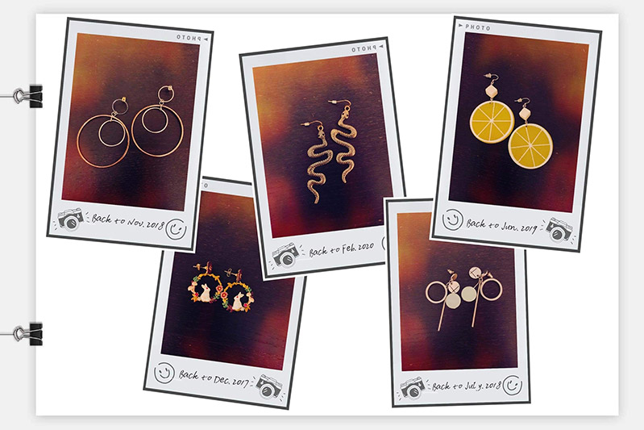

Learning Journal 5
Even though it was a longer read, I thought that Amir Dori’s article “Game Design UX Best Practices” was extremely insightful and in some ways reaffirmed my knowledge of certain UX principles. For example, when Dori talks about UI positions, I remember applying that concept to my DES 112 equity app by placing main primary buttons in the easy to reach area of the screen. I also remember applying the partially visible concept for sliders to my app to demonstrate the idea of continuity and additional information.
Other principles are newer to me, like the “Done” button rather than “x”, right button placement, dragging anchor, and color and animation usage. Even though they are super subtle, they actually make a lot of sense and can largely affect the user experience. I definitely agree with Dori that using these subtle principles to influence user behavior is extremely powerful in making life easier, but it can also somewhat manipulate users to benefit game companies instead.
Learning Journal 4
Part One
This image is interesting because I actually designed this t-shirt with my team of creatives. This is a sample graphic tee for my clothing brand called BOLTS, which will be officially launched in the coming months. Although the graphic might seem random, the illustrations, colors, typography, and layout all work together to tell a very cohesive story and add depth to the t-shirt. For example, the fruit characters and slogan “We’re all friends here” allude to the welcoming atmosphere of a typical farmers market. The stickers collaged on the back are our unique take on traditional produce stickers. The cream t-shirt was chosen to resemble the canvas tote bags often seen at farmers markets.
This t-shirt is part of my vast collection of graphic tees, but it is also the accumulation of the passion and all the years of collecting.
My collection of graphic tees is a reflection of my interests and personal taste in fashion. To me, it’s like an art collection because many of these tees have graphics from my favorite artists, like KAWS, Takashi Murakami, Daniel Arsham, Andy Warhol, Keith Haring, Jean-Michel Basquiat, and others. Some are associated with particular memories or are from my favorite brands, but they all hold a special place in my heart.
Part Two
This image is a collection of Grace’s earrings. It’s interesting to see that these earrings are quite intricate in design and seem to have a large presence due to their size. I also love the way that the photo has been edited to incorporate the Polaroid style frame and the faded gradient backgrounds in each frame. I think it was a good decision to put all the earrings in one image because it makes the collection feel grand. For most of these earrings, it’s pretty obvious to tell what it is actually supposed to be. The mysterious aspect to me is the reasoning behind why Grace chose these particular pieces out of the many different styles available.
Learning Journal 3
This was definitely one of the coolest and most immersive websites I have ever come across. I love the illustration style, and even though the overall look is simple, the attention to detail with backgrounds and creativity incorporating different Japanese dishes with environmental elements really did make it feel like entering a new world. The site essentially feels like a simplified video game, with the ability to rotate left, right, up, and down and click on different foods to complete mini challenges. In addition to the main interactive elements, there are animations placed everywhere, like the moving background images, main character, and even the small icon that appears after getting a badge changing expressions as you hover.
However, I do think some of the usability could be improved because there is a lot of new information hitting the user at once. The initial launch screen does not clearly suggest what the user should do, and when you enter Main Rice Street, there are so many pop ups to explore. The main path is also highlighted for you to proceed to the second world even if you haven't completed the first one, which gives the user even more options to choose from. It took me until the third world to fully adjust to the flow of the site.
Learning Journal 2
I thought that this article, by Naema Baskanderi, was a very interesting and educational read on modal windows. Even though most of the time I quickly dismiss these “pop-up” windows, I’m surprised by the amount of thought that goes into them. I do agree that following certain usability principles, like obvious escape hatches, specific button actions, and user initiation, can make the modal windows effective in actually grabbing the user’s attention. In my opinion, user initiation is probably the most important principle to implement because users will likely read through the modal window rather than getting frustrated when it automatically pops-up with an ad or newsletter sign up form.
I found it hard to visualize the keyboard accessibility and ARIA sections, as I have never encountered either. Later on, I hope to conduct more research on these and see how they actually work.
Learning Journal 1
This reading was definitely very helpful in clearly defining applicable UX practices to follow when designing a form. Although most of the information seems fairly common sense and is often seen on well designed websites, I enjoyed reading the detailed explanations behind why one would make these design choices. The list format is also extremely helpful in making the information more digestible and memorable for later reference.
Some of the tips that stand out to me are size fields accordingly, minimize drop down menus, providing matching keyboard, asking for sensitive information, and error message copy. Most forms I have interacted with usually have input boxes of equal length, but I do think adjusting the length will unconsciously prompt users to know what information should be inputted. When asking for sensitive information, I believe including the reason why is important because it provides some level of transparency that that information is actually needed or at least being used properly. Lastly, writing specific error messages will dramatically enhance the user experience by eliminating most of the frustration felt from a generic error message and letting the user know exactly what to fix.